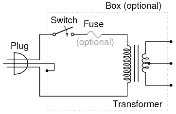
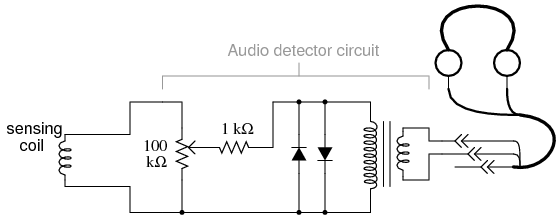

"AC" stands for Alternating Current, which can refer to either voltage or current that alternates in polarity or direction, respectively. These experiments are designed to introduce you to several important concepts specific to AC.
A convenient source of AC voltage is household wall-socket power, which presents significant shock hazard. In order to minimize this hazard while taking advantage of the convenience of this source of AC, a small power supply will be the first project, consisting of a transformer that steps the hazardous voltage (110 to 120 volts AC, RMS) down to 12 volts or less. The title of "power supply" is somewhat misleading. This device does not really act as a source or supply of power, but rather as a power converter, to reduce the hazardous voltage of wall-socket power to a much safer level.
PARTS AND MATERIALS
Power transformers may be obtained from old radios, which can usually be obtained from a thrift store for a few dollars (or less!). The radio would also provide the power cord and plug necessary for this project. Line cord switches may be obtained from a hardware store. If you want to be absolutely sure what kind of transformer you're getting, though, you should purchase one from an electronics supply store.
If you decide to equip your power supply with a fuse, be sure to get a slow-acting, or slow-blow fuse. Transformers may draw high "surge" currents when initially connected to an AC source, and these transient currents will blow a fast-acting fuse. Determine the proper current rating of the fuse by dividing the transformer's "VA" rating by 120 volts: in other words, calculate the full allowable primary winding current and size the fuse accordingly.
CROSS-REFERENCES
Lessons In Electric Circuits, Volume 2, chapter 1: "Basic AC Theory"
Lessons In Electric Circuits, Volume 2, chapter 9: "Transformers"
LEARNING OBJECTIVES
SCHEMATIC DIAGRAM

ILLUSTRATION
INSTRUCTIONS
Warning! This project involves the use of dangerous voltages. You must make sure all high-voltage (120 volt household power) conductors are safely insulated from accidental contact. No bare wires should be seen anywhere on the "primary" side of the transformer circuit. Be sure to solder all wire connections so that they're secure, and use real electrical tape (not duct tape, scotch tape, packing tape, or any other kind!) to insulate your soldered connections.
If you wish to enclose the transformer inside of a box, you may use an electrical "junction" box, obtained from a hardware store or electrical supply house. If the enclosure used is metal rather than plastic, a three-prong plug should be used, with the "ground" prong (the longest one on the plug) connected directly to the metal case for maximum safety.
Before plugging the plug into a wall socket, do a safety check with an ohmmeter. With the line switch in the "on" position, measure resistance between either plug prong and the transformer case. There should be infinite (maximum) resistance. If the meter registers continuity (some resistance value less than infinity), then you have a "short" between one of the power conductors and the case, which is dangerous!
Next, check the transformer windings themselves for continuity. With the line switch in the "on" position, there should be a small amount of resistance between the two plug prongs. When the switch is turned "off," the resistance indication should increase to infinity (open circuit -- no continuity). Measure resistance between pairs of wires on the secondary side. These secondary windings should register much lower resistances than the primary. Why is this?
Plug the cord into a wall socket and turn the switch on. You should be able to measure AC voltage at the secondary side of the transformer, between pairs of terminals. Between two of these terminals, you should measure about 12 volts. Between either of these two terminals and the third terminal, you should measure half that. This third wire is the "center-tap" wire of the secondary winding.
It would be advisable to keep this project assembled for use in powering other experiments shown in this book. From here on, I will designate this "low-voltage AC power supply" using this illustration:
COMPUTER SIMULATION
Schematic with SPICE node numbers:

Netlist (make a text file containing the following text, verbatim):
transformer with center-tap secondary v1 1 0 ac 120 sin rbogus1 1 2 1e-3 l1 2 0 10 l2 5 4 0.025 l3 4 3 0.025 k1 l1 l2 0.999 k2 l2 l3 0.999 k3 l1 l3 0.999 rbogus2 3 0 1e12 rload1 5 4 1k rload2 4 3 1k * Sets up AC analysis at 60 Hz: .ac lin 1 60 60 * Prints primary voltage between nodes 2 and 0: .print ac v(2,0) * Prints (top) secondary voltage between nodes 5 and 4: .print ac v(5,4) * Prints (bottom) secondary voltage between nodes 4 and 3: .print ac v(4,3) * Prints (total) secondary voltage between nodes 5 and 3: .print ac v(5,3) .end
PARTS AND MATERIALS
"Magnet wire" is small-gauge wire insulated with a thin enamel coating. It is intended to be used to make electromagnets, because many "turns" of wire may be wrapped in a relatively small-diameter coil. Any gauge of wire will work, but 28 gauge is recommended so as to make a coil with as many turns as possible in a small diameter.
CROSS-REFERENCES
Lessons In Electric Circuits, Volume 2, chapter 9: "Transformers"
LEARNING OBJECTIVES
SCHEMATIC DIAGRAM
ILLUSTRATION
INSTRUCTIONS
Wrap two, equal-length bars of steel with a thin layer of electrically-insulating tape. Wrap several hundred turns of magnet wire around these two bars. You may make these windings with an equal or unequal number of turns, depending on whether or not you want the transformer to be able to "step" voltage up or down. I recommend equal turns to begin with, then experiment later with coils of unequal turn count.
Join those bars together in a rectangle with two other, shorter, bars of steel. Use bolts to secure the bars together (it is recommended that you drill bolt holes through the bars before you wrap wire around them).
Check for shorted windings (ohmmeter reading between wire ends and steel bar) after you're finished wrapping the windings. There should be no continuity (infinite resistance) between the winding and the steel bar. Check for continuity between winding ends to ensure that the wire isn't broken open somewhere within the coil. If either resistance measurements indicate a problem, the winding must be re-made.
Power your transformer with the low-voltage output of the "power supply" described at the beginning of this chapter. Do not power your transformer directly from wall-socket voltage (120 volts), as your home-made windings really aren't rated for any significant voltage!
Measure the output voltage (secondary winding) of your transformer with an AC voltmeter. Connect a load of some kind (light bulbs are good!) to the secondary winding and re-measure voltage. Note the degree of voltage "sag" at the secondary winding as load current is increased.
Loosen or remove the connecting bolts from one of the short bar pieces, thus increasing the reluctance (analogous to resistance) of the magnetic "circuit" coupling the two windings together. Note the effect on output voltage and voltage "sag" under load.
If you've made your transformer with unequal-turn windings. try it in step-up versus step-down mode, powering different AC loads.
PARTS AND MATERIALS
CROSS-REFERENCES
Lessons In Electric Circuits, Volume 1, chapter 14: "Magnetism and Electromagnetism"
Lessons In Electric Circuits, Volume 1, chapter 15: "Inductors"
Lessons In Electric Circuits, Volume 2, chapter 3: "Reactance and Impedance -- Inductive"
LEARNING OBJECTIVES
SCHEMATIC DIAGRAM
ILLUSTRATION
INSTRUCTIONS
Wrap hundreds of turns of magnet wire around the paper tube. Connect this home-made inductor in series with an AC power supply and lamp to form a circuit. When the tube is empty, the lamp should glow brightly. When the steel bar is inserted in the tube, the lamp dims from increased inductance (L) and consequently increased inductive reactance (XL).
Try using bars of different materials, such as copper and stainless steel, if available. Not all metals have the same effect, due to differences in magnetic permeability.
PARTS AND MATERIALS
Regarding the headphones, the higher the "sensitivity" rating in decibels (dB), the better, but listening is believing: if you're serious about building a detector with maximum sensitivity for small electrical signals, you should try a few different headphone models at a high-quality audio store and "listen" for which ones produce an audible sound for the lowest volume setting on a radio or CD player. Beware, as you could spend hundreds of dollars on a pair of headphones to get the absolute best sensitivity! Take heart, though: I've used an old pair of Radio Shack "Realistic" brand headphones with perfectly adequate results, so you don't need to buy the best.
Normally, the transformer used in this type of application (audio speaker impedance matching) is called an "audio transformer," with its primary and secondary windings represented by impedance values (1000 Ω : 8 Ω) instead of voltages. An audio transformer will work, but I've found small step-down power transformers of 120/6 volt ratio to be perfectly adequate for the task, cheaper (especially when taken from an old thrift-store alarm clock radio), and far more rugged.
The tolerance (precision) rating for the 1 kΩ resistor is irrelevant. The 100 kΩ potentiometer is a recommended option for incorporation into this project, as it gives the user control over the loudness for any given signal. Even though an audio-taper potentiometer would be appropriate for this application, it is not necessary. A linear-taper potentiometer works quite well.
CROSS-REFERENCES
Lessons In Electric Circuits, Volume 1, chapter 8: "DC Metering Circuits"
Lessons In Electric Circuits, Volume 2, chapter 9: "Transformers"
Lessons In Electric Circuits, Volume 2, chapter 12: "AC Metering Circuits"
LEARNING OBJECTIVES
SCHEMATIC DIAGRAM
ILLUSTRATION
INSTRUCTIONS
This experiment is identical in construction to the "Sensitive Voltage Detector" described in the DC experiments chapter. If you've already built this detector, you may skip this experiment.
The headphones, most likely being stereo units (separate left and right speakers) will have a three-contact plug. You will be connecting to only two of those three contact points. If you only have a "mono" headphone set with a two-contact plug, just connect to those two contact points. You may either connect the two stereo speakers in series or in parallel. I've found the series connection to work best, that is, to produce the most sound from a small signal:

Solder all wire connections well. This detector system is extremely sensitive, and any loose wire connections in the circuit will add unwanted noise to the sounds produced by the measured voltage signal. The two diodes connected in parallel with the transformer's primary winding, along with the series-connected 1 kΩ resistor, work together to "clip" the input voltage to a maximum of about 0.7 volts. This does one thing and one thing only: limit the amount of sound the headphones can produce. The system will work without the diodes and resistor in place, but there will be no limit to sound volume in the circuit, and the resulting sound caused by accidentally connecting the test leads across a substantial voltage source (like a battery) can be deafening!
Binding posts provide points of connection for a pair of test probes with banana-style plugs, once the detector components are mounted inside a box. You may use ordinary multimeter probes, or make your own probes with alligator clips at the ends for secure connection to a circuit.
Detectors are intended to be used for balancing bridge measurement circuits, potentiometric (null-balance) voltmeter circuits, and detect extremely low-amplitude AC ("alternating current") signals in the audio frequency range. It is a valuable piece of test equipment, especially for the low-budget experimenter without an oscilloscope. It is also valuable in that it allows you to use a different bodily sense in interpreting the behavior of a circuit.
For connection across any non-trivial source of voltage (1 volt and greater), the detector's extremely high sensitivity should be attenuated. This may be accomplished by connecting a voltage divider to the "front" of the circuit:
SCHEMATIC DIAGRAM
ILLUSTRATION
Adjust the 100 kΩ voltage divider potentiometer to about mid-range when initially sensing a voltage signal of unknown magnitude. If the sound is too loud, turn the potentiometer down and try again. If too soft, turn it up and try again. This detector even senses DC and radio-frequency signals (frequencies below and above the audio range, respectively), a "click" being heard whenever the test leads make or break contact with the source under test. With my cheap headphones, I've been able to detect currents of less than 1/10 of a microamp (< 0.1 µA) DC, and similarly low-magnitude RF signals up to 2 MHz.
A good demonstration of the detector's sensitivity is to touch both test leads to the end of your tongue, with the sensitivity adjustment set to maximum. The voltage produced by metal-to-electrolyte contact (called galvanic voltage) is very small, but enough to produce soft "clicking" sounds every time the leads make and break contact on the wet skin of your tongue.
Try unplugging the headphone plug from the jack (receptacle) and similarly touching it to the end of your tongue. You should still hear soft clicking sounds, but they will be much smaller in amplitude. Headphone speakers are "low impedance" devices: they require low voltage and "high" current to deliver substantial sound power. Impedance is a measure of opposition to any and all forms of electric current, including alternating current (AC). Resistance, by comparison, is a strictly measure of opposition to direct current (DC). Like resistance, impedance is measured in the unit of the Ohm (Ω), but it is symbolized in equations by the capital letter "Z" rather than the capital letter "R". We use the term "impedance" to describe the headphone's opposition to current because it is primarily AC signals that headphones are normally subjected to, not DC.
Most small signal sources have high internal impedances, some much higher than the nominal 8 Ω of the headphone speakers. This is a technical way of saying that they are incapable of supplying substantial amounts of current. As the Maximum Power Transfer Theorem predicts, maximum sound power will be delivered by the headphone speakers when their impedance is "matched" to the impedance of the voltage source. The transformer does this. The transformer also helps aid the detection of small DC signals by producing inductive "kickback" every time the test lead circuit is broken, thus "amplifying" the signal by magnetically storing up electrical energy and suddenly releasing it to the headphone speakers.
As with the low-voltage AC power supply experiment, I recommend building this detector in a permanent fashion (mounting all components inside of a box, and providing nice test lead wires) so it can be easily used in the future. Constructed as such, it might look something like this:
PARTS AND MATERIALS
What is needed for an electromagnet coil is a coil with many turns of wire, so as to produce the most voltage possible from induction with stray magnetic fields. The coil taken from an old relay or solenoid works well for this purpose.
CROSS-REFERENCES
Lessons In Electric Circuits, Volume 2, chapter 7: "Mixed-Frequency AC Signals"
LEARNING OBJECTIVES
SCHEMATIC DIAGRAM

ILLUSTRATION
INSTRUCTIONS
Using the audio detector circuit explained earlier to detect AC voltage in the audio frequencies, a coil of wire may serve as sensor of AC magnetic fields. The voltages produced by the coil will be quite small, so it is advisable to adjust the detector's sensitivity control to "maximum."
There are many sources of AC magnetic fields to be found in the average home. Try, for instance, holding the coil close to a television screen or circuit-breaker box. The coil's orientation is every bit as important as its proximity to the source, as you will soon discover on your own! If you want to listen to more interesting tones, try holding the coil close to the motherboard of an operating computer (be careful not to "short" any connections together on the computer's circuit board with any exposed metal parts on the sensing coil!), or to its hard drive while a read/write operation is taking place.
One very strong source of AC magnetic fields is the home-made transformer project described earlier. Try experimenting with various degrees of "coupling" between the coils (the steel bars tightly fastened together, versus loosely fastened, versus dismantled). Another source is the variable inductor and lamp circuit described in another section of this chapter.
Note that physical contact with a magnetic field source is unnecessary: magnetic fields extend through space quite easily. You may also want to try "shielding" the coil from a strong source using various materials. Try aluminum foil, paper, sheet steel, plastic, or whatever other materials you can think of. What materials work best? Why? What angles (orientations) of coil position minimize magnetic coupling (result in a minimum of detected signal)? What does this tell us regarding inductor positioning if inter-circuit interference from other inductors is a bad thing?
Whether or not stray magnetic fields like these pose any health hazard to the human body is a hotly debated subject. One thing is clear: in today's modern society, low-level magnetic fields of all frequencies are easy to find!
PARTS AND MATERIALS
CROSS-REFERENCES
Lessons In Electric Circuits, Volume 2, chapter 7: "Mixed-Frequency AC Signals"
LEARNING OBJECTIVES
SCHEMATIC DIAGRAM
ILLUSTRATION
INSTRUCTIONS
"Ground" one lead of the detector to a metal object in contact with the earth (dirt). Most any water pipe or faucet in a house will suffice. Take the other lead and hold it close to an electrical appliance or lamp fixture. Do not try to make contact with the appliance or with any conductors within! Any AC electric fields produced by the appliance will be heard in the headphones as a buzzing tone.
Try holding the wire in different positions next to a good, strong source of electric fields. Try using a piece of aluminum foil clipped to the wire's end to maximize capacitance (and therefore its ability to intercept an electric field). Try using different types of material to "shield" the wire from an electric field source. What material(s) work best? How does this compare with the AC magnetic field experiment?
As with magnetic fields, there is controversy whether or not stray electric fields like these pose any health hazard to the human body.
PARTS AND MATERIALS
Old alternators may be obtained for low prices at automobile wrecking yards. Many yards have alternators already removed from the automobile, for your convenience. I do not recommend paying full price for a new alternator, as used units cost far less money and function just as well for the purposes of this experiment.
I highly recommend using a Delco-Remy brand of alternator. This is the type used on General Motors (GMC, Chevrolet, Cadillac, Buick, Oldsmobile) vehicles. One particular model has been produced by Delco-Remy since the early 1960's with little design change. It is a very common unit to locate in a wrecking yard, and very easy to work with.
If you obtain two alternators, you may use one as a generator and the other as a motor. The steps needed to prepare an alternator as a three-phase generator and as a three-phase motor are the same.
CROSS-REFERENCES
Lessons In Electric Circuits, Volume 1, chapter 14: "Magnetism and Electromagnetism"
Lessons In Electric Circuits, Volume 2, chapter 10: "Polyphase AC Circuits"
LEARNING OBJECTIVES
SCHEMATIC DIAGRAM
An automotive alternator is a three-phase generator with a built-in rectifier circuit consisting of six diodes. As the sheave (most people call it a "pulley") is rotated by a belt connected to the automobile engine's crankshaft, a magnet is spun past a stationary set of three-phase windings (called the stator), usually connected in a Y configuration. The spinning magnet is actually an electromagnet, not a permanent magnet. Alternators are designed this way so that the magnetic field strength can be controlled, in order that output voltage may be controlled independently of rotor speed. This rotor magnet coil (called the field coil, or simply field) is energized by battery power, so that it takes a small amount of electrical power input to the alternator to get it to generate a lot of output power.
Electrical power is conducted to the rotating field coil through a pair of copper "slip rings" mounted concentrically on the shaft, contacted by stationary carbon "brushes." The brushes are held in firm contact with the slip rings by spring pressure.
Many modern alternators are equipped with built-in "regulator" circuits that automatically switch battery power on and off to the rotor coil to regulate output voltage. This circuit, if present in the alternator you choose for the experiment, is unnecessary and will only impede your study if left in place. Feel free to "surgically remove" it, just make sure you leave access to the brush terminals so that you can power the field coil with the alternator fully assembled.
ILLUSTRATION
INSTRUCTIONS
First, consult an automotive repair manual on the specific details of your alternator. The documentation provided in the book you're reading now is as general as possible to accommodate different brands of alternators. You may need more specific information, and a service manual is the best place to obtain it.
For this experiment, you'll be connecting wires to the coils inside the alternator and extending them outside the alternator case, for easy connection to test equipment and circuits. Unfortunately, the connection terminals provided by the manufacturer won't suit our needs here, so you need to make your own connections.
Disassemble the unit and locate terminals for connecting to the two carbon brushes. Solder a pair of wires to these terminals (at least 20 gauge in size) and extend these wires through vent holes in the alternator case, making sure they won't get snagged on the spinning rotor when the alternator is re-assembled and used.
Locate the three-phase line connections coming from the stator windings and connect wires to them as well, extending these wires outside the alternator case through some vent holes. Use the largest gauge wire that is convenient to work with for these wires, as they may be carrying substantial current. As with the field wires, route them in such a way that the rotor will turn freely with the alternator reassembled. The stator winding line terminals are easy to locate: the three of them connect to three terminals on the diode assembly, usually with "ring-lug" terminals soldered to the ends of the wires.
I recommend that you solder ring-lug terminals to your wires, and attach them underneath the terminal nuts along with the stator wire ends, so that each diode block terminal is securing two ring lugs.
Re-assemble the alternator, taking care to secure the carbon brushes in a retracted position so that the rotor doesn't damage them upon re-insertion. On Delco-Remy alternators, a small hole is provided on the back case half, and also at the front of the brush holder assembly, through which a paper clip or thin-gauge wire may be inserted to hold the brushes back against their spring pressure. Consult the service manual for more details on alternator assembly.
When the alternator has been assembled, try spinning the shaft and listen for any sounds indicative of colliding parts or snagged wires. If there is any such trouble, take it apart again and correct whatever is wrong.
If and when it spins freely as it should, connect the two "field" wires to a 6-volt battery. Connect an voltmeter to any two of the three-phase line connections:
With the multimeter set to the "DC volts" function, slowly rotate the alternator shaft. The voltmeter reading should alternate between positive and negative as the shaft it turned: a demonstration of very slow alternating voltage (AC voltage) being generated. If this test is successful, switch the multimeter to the "AC volts" setting and try again. Try spinning the shaft slow and fast, comparing voltmeter readings between the two conditions.
Short-circuit any two of the three-phase line wires and try spinning the alternator. What you should notice is that the alternator shaft becomes more difficult to spin. The heavy electrical load you've created via the short circuit causes a heavy mechanical load on the alternator, as mechanical energy is converted into electrical energy.
Now, try connecting 12 volts DC to the field wires. Repeat the DC voltmeter, AC voltmeter, and short-circuit tests described above. What difference(s) do you notice?
Find some sort of polarity-insensitive 6 or 12 volts loads, such as small incandescent lamps, and connect them to the three-phase line wires. Wrap a thin rope or heavy string around the groove of the sheave ("pulley") and spin the alternator rapidly, and the loads should function.
If you have a second alternator, modify it as you modified the first one, connecting five of your own wires to the field brushes and stator line terminals, respectively. You can then use it as a three-phase motor, powered by the first alternator.
Connect each of the three-phase line wires of the first alternator to the respective wires of the second alternator. Connect the field wires of one alternator to a 6 volt battery. This alternator will be the generator. Wrap rope around the sheave in preparation to spin it. Take the two field wires of the second alternator and short them together. This alternator will be the motor:
Spin the generator shaft while watching the motor shaft's rotation. Try reversing any two of the three-phase line connections between the two units and spin the generator again. What is different this time?
Connect the field wires of the motor unit to the a 6 volt battery (you may parallel-connect this field with the field of the generator unit, across the same battery terminals, if the battery is strong enough to deliver the several amps of current both coils will draw together). This will magnetize the rotor of the motor. Try spinning the generator again and note any differences in operation.
In the first motor setup, where the field wires were simple shorted together, the motor was functioning as an induction motor. In the second setup, where the motor's rotor was magnetized, it functioned as a synchronous motor.
If you are feeling particularly ambitious and are skilled in metal fabrication techniques, you may make your own high-power generator platform by connecting the modified alternator to a bicycle. I've built an arrangement that looks like this:
The rear wheel drives the generator sheave with a long v-belt. This belt also supports the rear of the bicycle, maintaining a constant tension when a rider is pedaling the bicycle. The generator hangs from a steel support structure (I used welded 2-inch square tubing, but a frame could be made out of lumber). Not only is this machine practical, but it is reliable enough to be used as an exercise machine, and it is inexpensive to make:
You can see a bank of three 12-volt "RV" light bulbs behind the bicycle unit (in the lower-left corner of the photograph), which I use for a load when riding the bicycle as an exercise machine. A set of three switches is mounted at the front of the bicycle, where I can turn loads on and off while riding.
By rectifying the three-phase AC power produced, it is possible to have the alternator power its own field coil with DC voltage, eliminating the need for a battery. However, some independent source of DC voltage will still be necessary for start-up, as the field coil must be energized before any AC power can be produced.
PARTS AND MATERIALS
CROSS-REFERENCES
Lessons In Electric Circuits, Volume 2, chapter 13: "AC motors", "Single Phase induction motors","Permanent split-capacitor motor".
LEARNING OBJECTIVES
SCHEMATIC DIAGRAM
ILLUSTRATION

INSTRUCTIONS
There are two parts lists to choose from depending upon the availability of 120VAC or 220VAC. Choose the one for your location. This set of instructions is for the 120VAC version.
This is a simplified version of a "permanent capacitor split-phase induction motor". By simplified, we mean the coils only requires a few hundred turns of wire instead of a few thousand. This is easier to wind. Though, the larger few thousand turns model is impressive. There are two stator coils as shown in the illustration above. Approximately 440 turns of #32 AWG (American wire gauge) enameled magnet wire are wound over a one inch length of a slightly longer section of 1.75 inch diameter toilet paper tube. To avoid counting the turns, close-wind four layers of magnet wire over a one inch width of the tube. See (b) above. Leave a few inches of magnet wire for the leads. Tape the beginning lead near the end of the tube so that the windings will cover and anchor the tape. Do not cut the final width of the cardboard tube until the winding is finished. Close wind a single layer. Tape or cement the first layer to prevent unwinding before proceeding to the second layer. Though it is possible to wind additional layers directly over existing layers, consider applying tape or paper between the layers as shown in schematic (b). After four layers are wound, glue the windings in place.
If close winding four layers of magnet wire it too difficult, scramble wind 440 turns of the magnet wire over the end of the cardboard tube. However, the close-wound style coil mounts more easily to the baseboard. Keep the windings within a one inch length.
Cut the finished winding from the end of the cardboard tube with a razor knife allowing the form to extend a little beyond the winding. Strip the enamel from an inch off the ends of the pair of lead wires with sandpaper. Splice the bare ends to heavier gauge insulated hook-up wire. Solder the splice. Insulate with tape or heat-shrink tubing. Secure the splice to the coil body. Then proceed with a second identical coil.
Refer to both the schematic diagram and the illustration for assembly. Note that the coils are mounted at right angles. They may be cemented to an insulating baseboard like wood. The 25 watt lamp is wired in series with one coil. This limits the current flowing through the coil. The lamp is a substitute for an 820 Ω power resistor. The capacitor is wired in series with the other coil. It also limits the current through the coil. In addition, it provides a leading phase shift of the current with respect to voltage. The schematic and illustration show no power switch or fuse. Add these if desired.
The rotor must be made of a ferromagnetic material like a steel can lid or bottle cap. The illustration below shows how to make the rotor. Select a circular rotor either smaller than the coil forms or a little larger. Use geometry to locate and mark the center. The center needs to be dimpled. Select an eighth inch diameter (a few mm) nail (a) and file or grind the point round as shown at (b). Place the rotor atop a piece of soft wood (c) and hammer the rounded point into the center (d). Practice on a piece of similar scrap metal. Take care not to pierce the rotor. A dished rotor (f) or a lid (g) balance better than the flat rotor (e). The pivot point (e) may be a straight pin driven through a movable wooden pedestal, or through the main board. The tip of a ball-point pen also works. If the rotor does not balance atop the pivot, remove metal from the heavy side.
Double check the wiring. Check that any bare wire has been insulated. The circuit may be powered-up without the rotor. The lamp should light. Both coils will warm within a few minutes. Excessive heating means that a lower wattage (higher resistance) lamp and a lower value capacitor should be substituted in series with the respective coils.
Place the rotor atop the pivot and move it between both coils. It should spin. The closer it is, the faster it should spin. Both coils should be warm, indicating power. Try different size and style rotors. Try a small rotor on the opposite side of the coils compared to the illustration.
For lack of #32 AWG magnet wire try 440 turns of slightly a larger diameter (lesser AWG number) wire. This will require more than 4 layers for the required turns. A night-light fixture might be less expensive than the full-size lamp socket illustrated. Though night-light bulbs are too low a wattage at 3 or 7 watts, 15 watt bulbs fit the socket.
PARTS AND MATERIALS
CROSS-REFERENCES
Lessons In Electric Circuits, Volume 2, chapter 13: "AC motors", "Single Phase induction motors","Permanent split-capacitor motor".
LEARNING OBJECTIVES
SCHEMATIC DIAGRAM
ILLUSTRATION

INSTRUCTIONS
This is a larger version of a "permanent capacitor split-phase induction motor". There are two different stator coils. The 1.0 inch wide 3200 turn L2 winding is shown in the illustration above (b), wound over a section of 5.1 inch diameter plastic 3-liter soda bottle. L1 is approximately 3800 turns of #33 AWG (American wire gauge) enameled magnet wire wound over a 1.25 width of a section of soda bottle, wider than shown at (b). Mark a 1.25 inch wide cylinder with 0.25 inch margins on each end. The wire will be wound on the 1.25 inch zone. The form is cut from the bottle on the outside edges of the margin. Cuts of 0.25 inch from the margin to winding zone are spaced at 1 inch intervals around the circumference of both ends so that the margin may be bent up at 90o to hold the wire on the form. To avoid counting the 3800 turns, scramble wind a 1/8 inch thickness of magnet wire over the one inch width of the form. Else, count the turns. Scrape the enamel from 1-inch on the free end, and scrape only a small section from the lead to the spool. Do NOT cut the lead to the spool. Measure the resistance, and estimate how much more wire to wind to achieve 894 Ω. Apply enamel, nail polish, tape, or other insulation to the bare spot on the spool lead. Continue winding, and recheck the resistance. Once the approximate 894 Ω is achieved, leave a few inches of magnet wire for the lead. Cut the lead from the spool. Secure the windings to the form with lacing twine or other means.
The L1 winding of 3200 turns is approximately 744 Ω and is wound on a 1.0 inch wide form as shown at (b) in a manner similar to the previous L2 winding.
Strip the enamel off 1-inch of the ends of magnet wire leads if not already done. Splice the bare ends to heavier gauge insulated hook-up wire. Solder the splice. Insulate with tape or heat-shrink tubing. Secure the splice to the coil body. Then proceed with the second coil. The coils may be mounted in one corner of the wooden base. Alternatively, for more flexability in use, they may be mounted to movable pallets.
Refer to both the schematic diagram and the illustration for assembly. Note that the coils are mounted at right angles. L2, the smaller coil is wired to both sides of the 120 Vac line. The capacitor is wired in series with the wider coil L1. The capacitor provides a leading phase shift of the current with respect to voltage. The schematic and illustration show no power switch or fuse. Add these additions are recommended.
If this device is intended for use by non-technicians as an unsupervised exhibit, all exposed bare terminations like the capacitor must be made finger safe by covering with shields. The switch and fuse mentioned above are necessary. Finally, the enamel on the coils only provides a single layer of insulation. For safety, a second layer such as an insulating wrapping, Plexiglas box, or other means is called for. Replace all wooden components with Plexiglas for superior fire safety in an unsupervised exhibit.
The rotor must be made of a ferromagnetic material like a steel vegetable can, fruitcake can, etc. A too long vegetable can may be cut in half. The illustration for the previous small induction motor shows rotor dimpled bearing and pivot details. The rotor may be smaller than the coil forms as in the case of a cut down vegetable can. It can even be as small as the can lid rotor used with the previous small motor. It is also possible to drive a rotor larger than the coils, which is the case with the fruitcake can. Locate and mark the center of the rotor. The center needs to be dimpled. Select an eighth inch diameter (a few mm) nail (a) and file or grind the point round. Use this and a block of wood to dimple the rotor as shown in the previous small motor A fairly long can balances better than a flat rotor due to the lower center of gravity. The tip of a ball point pen works well as a pivot for larger rotors. Mount the pivot to a movable wooden pedestal.
Double check the wiring. Check that any bare wire has been insulated. The circuit may be powered-up without the rotor. Excessive heating in L2 indicates that more turns are required. Excessive heat in L1 calls for a reduction in the capacitance of C1. No heat at all indicates indicates an open circuit to the affected coil.
Place the rotor atop the pivot and move it between both energized coils. It should spin. The closer it is, the faster it should spin. Both coils should be warm, indicating power. Try different size and style rotors. Try a small rotor on the opposite side of the coils compared to the illustration.
Three models of this motor have been built using #33 AWG magnet wire because a large spool was on hand. AWG #32 magnet wire is probably easier to get. It should work. Although the current will be higher due to the lower resistance of the larger diameter #32 wire. If a 3.3µF capacitor is not available, use somenting close as long as it has an adequate voltage rating. A discarded AC motor run capacitor (bath tub shaped) was used by the author. Do no use a motor start capacitor (black cylinder). These are only usable for a few seconds of motor starting, and may explode if used longer than that.
Try this: It is possible to simultaneously spin more than one rotor. For example, in addition to the main rotor inside the right angle formed by the coils, place a second smaller rotor (can or bottle lid) near the pair of coils outside the right angle at the vertex.
It is possible to reverse the direction of rotation by reversing one of the coils. If the coils are mounted to movable pallets, rotate one coil 180o. Another method, especially usefull with fixed coils, is to wire one of the coils to a DPDT polarity reversing switch. For example, disconnect L2 and wire it to the wipers (center contacts) of the DPDT switch. The top contacts go to the 120 Vac. The top contacts also go to the the bottom contacts in an X-crossover pattern.
PARTS AND MATERIALS
I recommend ceramic disk capacitors, because they are insensitive to polarity (non-polarized), inexpensive, and durable. Avoid capacitors with any kind of polarity marking, as these will be destroyed when powered by AC!
CROSS-REFERENCES
Lessons In Electric Circuits, Volume 2, chapter 1: "Basic AC Theory"
Lessons In Electric Circuits, Volume 2, chapter 4: "Reactance and Impedance -- Capacitive"
LEARNING OBJECTIVES
SCHEMATIC DIAGRAM
ILLUSTRATION
INSTRUCTIONS
Build the circuit and measure voltage drops across each component with an AC voltmeter. Measure total (supply) voltage with the same voltmeter. You will discover that the voltage drops do not add up to equal the total voltage. This is due to phase shifts in the circuit: voltage dropped across the capacitors is out-of-phase with voltage dropped across the resistors, and thus the voltage drop figures do not add up as one might expect. Taking phase angle into consideration, they do add up to equal the total, but a voltmeter doesn't provide phase angle measurements, only amplitude.
Try measuring voltage dropped across both resistors at once. This voltage drop will equal the sum of the voltage drops measured across each resistor separately. This tells you that both the resistors' voltage drop waveforms are in-phase with each other, since they add simply and directly.
Measure voltage dropped across both capacitors at once. This voltage drop, like the drop measured across the two resistors, will equal the sum of the voltage drops measured across each capacitor separately. Likewise, this tells you that both the capacitors' voltage drop waveforms are in-phase with each other.
Given that the power supply frequency is 60 Hz (household power frequency in the United States), calculate impedances for all components and determine all voltage drops using Ohm's Law (E=IZ ; I=E/Z ; Z=E/I). The polar magnitudes of the results should closely agree with your voltmeter readings.
COMPUTER SIMULATION
Schematic with SPICE node numbers:
The two large-value resistors Rbogus1 and Rbogus1 are connected across the capacitors to provide a DC path to ground in order that SPICE will work. This is a "fix" for one of SPICE's quirks, to avoid it from seeing the capacitors as open circuits in its analysis. These two resistors are entirely unnecessary in the real circuit.
Netlist (make a text file containing the following text, verbatim):
phase shift v1 1 0 ac 12 sin r1 1 2 27k r2 2 3 27k c1 3 4 0.1u c2 4 0 0.1u rbogus1 3 4 1e9 rbogus2 4 0 1e9 .ac lin 1 60 60 * Voltage across each component: .print ac v(1,2) v(2,3) v(3,4) v(4,0) * Voltage across pairs of similar components .print ac v(1,3) v(3,0) .end
PARTS AND MATERIALS
Large, low-frequency ("woofer") speakers are most appropriate for this experiment. For optimum results, the speakers should be identical and mounted in enclosures.
CROSS-REFERENCES
Lessons In Electric Circuits, Volume 2, chapter 1: "Basic AC Theory"
LEARNING OBJECTIVES
SCHEMATIC DIAGRAM

ILLUSTRATION
INSTRUCTIONS
Connect each speaker to the low-voltage AC power supply through a 220 Ω resistor. The resistor limits the amount of power delivered to each speaker by the power supply. A low-pitched, 60-Hertz tone should be heard from the speakers. If the tone sounds too loud, use higher-value resistors.
With both speakers connected and producing sound, position them so that they are only a foot or two away, facing toward each other. Listen to the volume of the 60-Hertz tone. Now, reverse the connections (the "polarity") of just one of the speakers and note the volume again. Try switching the polarity of one speaker back and forth from original to reversed, comparing volume levels each way. What do you notice?
By reversing wire connections to one speaker, you are reversing the phase of that speaker's sound wave in reference to the other speaker. In one mode, the sound waves will reinforce one another for a strong volume. In the other mode, the sound waves will destructively interfere, resulting in diminished volume. This phenomenon is common to all wave events: sound waves, electrical signals (voltage "waves"), waves in water, and even light waves!
Multiple speakers in a stereo sound system must be properly "phased" so that their respective sound waves don't cancel each other, leaving less total sound level for the listener(s) to hear. So, even in an AC system where there really is no such thing as constant "polarity," the sequence of wire connections may make a significant difference in system performance.
This principle of volume reduction by destructive interference may be exploited for noise cancellation. Such systems sample the waveform of the ambient noise, then produce an identical sound signal 180o out of phase with the noise. When the two sound signals meet, they cancel each other out, ideally eliminating all the noise. As one might guess, this is much easier accomplished with noise sources of steady frequency and amplitude. Cancellation of random, broad-spectrum noise is very difficult, as some sort of signal-processing circuit must sample the noise and generate precisely the right amount of cancellation sound at just the right time in order to be effective.
PARTS AND MATERIALS
In this experiment, you'll learn how to use an electronic musical keyboard as a source of variable-frequency AC voltage signals. You need not purchase an expensive keyboard for this -- but one with at least a few dozen "voice" selections (piano, flute, harp, etc.) would be good. The "mono" plug will be plugged into the headphone jack of the musical keyboard, so get a plug that's the correct size for the keyboard.
The "impedance matching transformer" is a small-size transformer easily obtained from an electronics supply store. One may be scavenged from a small, junk radio: it connects between the speaker and the circuit board (amplifier), so is easily identifiable by location. The primary winding is rated in ohms of impedance (1000 Ω), and is usually center-tapped. The secondary winding is 8 Ω and not center-tapped. These impedance figures are not the same as DC resistance, so don't expect to read 1000 Ω and 8 Ω with your ohmmeter -- however, the 1000 Ω winding will read more resistance than the 8 Ω winding, because it has more turns.
If such a transformer cannot be obtained for the experiment, a regular 120V/6V step-down power transformer works fairly well, too.
CROSS-REFERENCES
Lessons In Electric Circuits, Volume 2, chapter 1: "Basic AC Theory"
Lessons In Electric Circuits, Volume 2, chapter 7: "Mixed-Frequency AC Signals"
LEARNING OBJECTIVES
SCHEMATIC DIAGRAM
ILLUSTRATION
INSTRUCTIONS
Normally, a student of electronics in a school would have access to a device called a signal generator, or function generator, used to make variable-frequency voltage waveforms to power AC circuits. An inexpensive electronic keyboard is a cheaper alternative to a regular signal generator, and provides features that most signal generators cannot match, such as producing mixed-frequency waves.
To "tap in" to the AC voltage produced by the keyboard, you'll need to insert a plug into the headphone jack (sometimes just labeled "phone" on the keyboard) complete with two wires for connection to circuits of your own design. When you insert the plug into the jack, the normal speaker built in to the keyboard will be disconnected (assuming the keyboard is equipped with one), and the signal that used to power that speaker will be available at the plug wires. In this particular experiment, I recommend using the keyboard to power the 8 Ω side of an audio "output" transformer to step up voltage to a higher level. If using a power transformer instead of an audio output transformer, connect the keyboard to the low-voltage winding so that it operates as a step-up device. Keyboards produce very low voltage signals, so there is no shock hazard in this experiment.
Using an inexpensive Yamaha keyboard, I have found that the "panflute" voice setting produces the truest sine-wave waveform. This waveform, or something close to it (flute, for example), is recommended to start experimenting with since it is relatively free of harmonics (many waveforms mixed together, of integer-multiple frequency). Being composed of just one frequency, it is a less complex waveform for your multimeter to measure. Make sure the keyboard is set to a mode where the note will be sustained as any key is held down -- otherwise, the amplitude (voltage) of the waveform will be constantly changing (high when the key is first pressed, then decaying rapidly to zero).
Using an AC voltmeter, read the voltage direct from the headphone plug. Then, read the voltage as stepped up by the transformer, noting the step ratio. If your multimeter has a "frequency" function, use it to measure the frequency of the waveform produced by the keyboard. Try different notes on the keyboard and record their frequencies. Do you notice a pattern in frequency as you activate different notes, especially keys that are similar to each other (notice the 12-key black-and-white pattern repeated on the keyboard from left to right)? If you don't mind making marks on your keyboard, write the frequencies in Hertz in black ink on the white keys, near the tops where fingers are less likely to rub the numbers off.
Ideally, there should be no change in signal amplitude (voltage) as different frequencies (notes on the keyboard) are tried. If you adjust the volume up and down, you should discover that changes in amplitude should have little or no impact on frequency measurement. Amplitude and frequency are two completely independent aspects of an AC signal.
Try connecting the keyboard output to a 10 kΩ load resistance (through the headphone plug), and measure AC current with your multimeter. If your multimeter has a frequency function, you can measure the frequency of this current as well. It should be the same as for the voltage for any given note (keyboard key).
PARTS AND MATERIALS
The Winscope program I've used was written by Dr. Constantin Zeldovich, for free personal and academic use. It plots waveforms on the computer screen in response to AC voltage signals interpreted by the sound card microphone input. A similar program, called Oscope, is made for the Linux operating system. If you don't have access to either software, you may use the "sound recorder" utility that comes stock with most versions of Microsoft Windows to display crude waveshapes.
CROSS-REFERENCES
Lessons In Electric Circuits, Volume 2, chapter 7: "Mixed-Frequency AC Signals"
Lessons In Electric Circuits, Volume 2, chapter 12: "AC Metering Circuits"
LEARNING OBJECTIVES
SCHEMATIC DIAGRAM
ILLUSTRATION
INSTRUCTIONS
The oscilloscope is an indispensable test instrument for the electronics student and professional. No serious electronics lab should be without one (or two!). Unfortunately, commercial oscilloscopes tend to be expensive, and it is almost impossible to design and build your own without another oscilloscope to troubleshoot it! However, the sound card of a personal computer is capable of "digitizing" low-voltage AC signals from a range of a few hundred Hertz to several thousand Hertz with respectable resolution, and free software is available for displaying these signals in oscilloscope form on the computer screen. Since most people either have a personal computer or can obtain one for less cost than an oscilloscope, this becomes a viable alternative for the experimenter on a budget.
One word of caution: you can cause significant hardware damage to your computer if signals of excessive voltage are connected to the sound card's microphone input! The AC voltages produced by a musical keyboard are too low to cause damage to your computer through the sound card, but other voltage sources might be hazardous to your computer's health. Use this "oscilloscope" at your own risk!
Using the keyboard and plug arrangement described in the previous experiment, connect the keyboard output to the outer terminals of a 10 kΩ potentiometer. Solder two wires to the connection points on the sound card microphone input plug, so that you have a set of "test leads" for the "oscilloscope." Connect these test leads to the potentiometer: between the middle terminal (the wiper) and either of the outer terminals.
Start the Winscope program and click on the "arrow" icon in the upper-left corner (it looks like the "play" arrow seen on tape player and CD player control buttons). If you press a key on the musical keyboard, you should see some kind of waveform displayed on the screen. Choose the "panflute" or some other flute-like voice on the musical keyboard for the best sine-wave shape. If the computer displays a waveform that looks kind of like a square wave, you need to adjust the potentiometer for a lower-amplitude signal. Almost any waveshape will be "clipped" to look like a square wave if it exceeds the amplitude limit of the sound card.
Test different instrument "voices" on the musical keyboard and note the different waveshapes. Note how complex some of the waveshapes are, compared to the panflute voice. Experiment with the different controls in the Winscope window, noting how they change the appearance of the waveform.
As a test instrument, this "oscilloscope" is quite poor. It has almost no capability to make precision measurements of voltage, although its frequency precision is surprisingly good. It is very limited in the ranges of voltage and frequency it can display, relegating it to the analysis of low- and mid-range audio tones. I have had very little success getting the "oscilloscope" to display good square waves, presumably because of its limited frequency response. Also, the coupling capacitor found in sound card microphone input circuits prevents it from measuring DC voltage: it is as though the "AC coupling" feature of a normal oscilloscope were stuck "on."
Despite these shortcomings, it is useful as a demonstration tool, and for initial explorations into waveform analysis for the beginning student of electronics. For those who are interested, there are several professional-quality oscilloscope adapter devices manufactured for personal computers whose performance is far beyond that of a sound card, and they are typically sold at less cost than a complete stand-alone oscilloscope (around $400, year 2002). Radio Shack sells one made by Velleman, catalog # 910-3914. Having a computer serve as the display medium brings many advantages, not the least of which is the ability to easily store waveform pictures as digital files.
PARTS AND MATERIALS
Parts and equipment for this experiment are identical to those required for the "PC oscilloscope" experiment.
CROSS-REFERENCES
Lessons In Electric Circuits, Volume 2, chapter 7: "Mixed-Frequency AC Signals"
LEARNING OBJECTIVES
SCHEMATIC DIAGRAM
ILLUSTRATION
INSTRUCTIONS
The Winscope program comes with another feature other than the typical "time-domain" oscilloscope display: "frequency-domain" display, which plots amplitude (vertical) over frequency (horizontal). An oscilloscope's "time-domain" display plots amplitude (vertical) over time (horizontal), which is fine for displaying waveshape. However, when it is desirable to see the harmonic constituency of a complex wave, a frequency-domain plot is the best tool.
If using Winscope, click on the "rainbow" icon to switch to frequency-domain mode. Generate a sine-wave signal using the musical keyboard (panflute or flute voice), and you should see a single "spike" on the display, corresponding to the amplitude of the single-frequency signal. Moving the mouse cursor beneath the peak should result in the frequency being displayed numerically at the bottom of the screen.
If two notes are activated on the musical keyboard, the plot should show two distinct peaks, each one corresponding to a particular note (frequency). Basic chords (three notes) produce three spikes on the frequency-domain plot, and so on. Contrast this with normal oscilloscope (time-domain) plot by clicking once again on the "rainbow" icon. A musical chord displayed in time-domain format is a very complex waveform, but is quite simple to resolve into constituent notes (frequencies) on a frequency-domain display.
Experiment with different instrument "voices" on the musical keyboard, correlating the time-domain plot with the frequency-domain plot. Waveforms that are symmetrical above and below their centerlines contain only odd-numbered harmonics (odd-integer multiples of the base, or fundamental frequency), while nonsymmetrical waveforms contain even-numbered harmonics as well. Use the cursor to locate the specific frequency of each peak on the plot, and a calculator to determine whether each peak is even- or odd-numbered.
PARTS AND MATERIALS
The power transformer is used simply as an inductor, with only one winding connected. The unused winding should be left open. A simple iron core, single-winding inductor (sometimes known as a choke) may also be used, but such inductors are more difficult to obtain than power transformers.
CROSS-REFERENCES
Lessons In Electric Circuits, Volume 2, chapter 6: "Resonance"
LEARNING OBJECTIVES
SCHEMATIC DIAGRAM
ILLUSTRATION
INSTRUCTIONS
If an inductor and a capacitor are connected in parallel with each other, and then briefly energized by connection to a DC voltage source, oscillations will ensue as energy is exchanged from the capacitor to inductor and vice versa. These oscillations may be viewed with an oscilloscope connected in parallel with the inductor/capacitor circuit. Parallel inductor/capacitor circuits are commonly known as tank circuits.
Important note: I recommend against using a PC/sound card as an oscilloscope for this experiment, because very high voltages can be generated by the inductor when the battery is disconnected (inductive "kickback"). These high voltages will surely damage the sound card's input, and perhaps other portions of the computer as well.
A tank circuit's natural frequency, called the resonant frequency, is determined by the size of the inductor and the size of the capacitor, according to the following equation:
Many small power transformers have primary (120 volt) winding inductances of approximately 1 H. Use this figure as a rough estimate of inductance for your circuit to calculate expected oscillation frequency.
Ideally, the oscillations produced by a tank circuit continue indefinitely. Realistically, oscillations will decay in amplitude over the course of several cycles due to the resistive and magnetic losses of the inductor. Inductors with a high "Q" rating will, of course, produce longer-lasting oscillations than low-Q inductors.
Try changing capacitor values and noting the effect on oscillation frequency. You might notice changes in the duration of oscillations as well, due to capacitor size. Since you know how to calculate resonant frequency from inductance and capacitance, can you figure out a way to calculate inductor inductance from known values of circuit capacitance (as measured by a capacitance meter) and resonant frequency (as measured by an oscilloscope)?
Resistance may be intentionally added to the circuit -- either in series or parallel -- for the express purpose of dampening oscillations. This effect of resistance dampening tank circuit oscillation is known as antiresonance. It is analogous to the action of a shock absorber in dampening the bouncing of a car after striking a bump in the road.
COMPUTER SIMULATION
Schematic with SPICE node numbers:

Rstray is placed in the circuit to dampen oscillations and produce a more realistic simulation. A lower Rstray value causes longer-lived oscillations because less energy is dissipated. Eliminating this resistor from the circuit results in endless oscillation.
Netlist (make a text file containing the following text, verbatim):
tank circuit with loss l1 1 0 1 ic=0 rstray 1 2 1000 c1 2 0 0.1u ic=6 .tran 0.1m 20m uic .plot tran v(1,0) .end
PARTS AND MATERIALS
Telephone cable is also available from hardware stores. Any unshielded multiconductor cable will suffice for this experiment. Cables with thin conductors (telephone cable is typically 24-gauge) produce a more pronounced effect.
CROSS-REFERENCES
Lessons In Electric Circuits, Volume 2, chapter 7: "Mixed-Frequency AC Signals"
Lessons In Electric Circuits, Volume 2, chapter 8: "Filters"
LEARNING OBJECTIVES
SCHEMATIC DIAGRAM
ILLUSTRATION
INSTRUCTIONS
Connect the motor to the battery using two of the telephone cable's four conductors. The motor should run, as expected. Now, connect the audio signal detector across the motor terminals, with the 0.047 µF capacitor in series, like this:
You should be able to hear a "buzz" or "whine" in the headphones, representing the AC "noise" voltage produced by the motor as the brushes make and break contact with the rotating commutator bars. The purpose of the series capacitor is to act as a high-pass filter, so that the detector only receives the AC voltage across the motor's terminals, not any DC voltage. This is precisely how oscilloscopes provide an "AC coupling" feature for measuring the AC content of a signal without any DC bias voltage: a capacitor is connected in series with one test probe.
Ideally, one would expect nothing but pure DC voltage at the motor's terminals, because the motor is connected directly in parallel with the battery. Since the motor's terminals are electrically common with the respective terminals of the battery, and the battery's nature is to maintain a constant DC voltage, nothing but DC voltage should appear at the motor terminals, right? Well, because of resistance internal to the battery and along the conductor lengths, current pulses drawn by the motor produce oscillating voltage "dips" at the motor terminals, causing the AC "noise" heard by the detector:

Use the audio detector to measure "noise" voltage directly across the battery. Since the AC noise is produced in this circuit by pulsating voltage drops along stray resistances, the less resistance we measure across, the less noise voltage we should detect:
You may also measure noise voltage dropped along either of the telephone cable conductors supplying power to the motor, by connecting the audio detector between both ends of a single cable conductor. The noise detected here originates from current pulses through the resistance of the wire:

Now that we have established how AC noise is created and distributed in this circuit, let's explore how it is coupled to adjacent wires in the cable. Use the audio detector to measure voltage between one of the motor terminals and one of the unused wires in the telephone cable. The 0.047 µF capacitor is not needed in this exercise, because there is no DC voltage between these points for the detector to detect anyway:
The noise voltage detected here is due to stray capacitance between adjacent cable conductors creating an AC current "path" between the wires. Remember that no current actually goes through a capacitance, but the alternate charging and discharging action of a capacitance, whether it be intentional or unintentional, provides alternating current a pathway of sorts.
If we were to try and conduct a voltage signal between one of the unused wires and a point common with the motor, that signal would become tainted with noise voltage from the motor. This could be quite detrimental, depending on how much noise was coupled between the two circuits and how sensitive one circuit was to the other's noise. Since the primary coupling phenomenon in this circuit is capacitive in nature, higher-frequency noise voltages are more strongly coupled than lower-frequency noise voltages.
If the additional signal was a DC signal, with no AC expected in it, we could mitigate the problem of coupled noise by "decoupling" the AC noise with a relatively large capacitor connected across the DC signal's conductors. Use the 0.22 µF capacitor for this purpose, as shown:
The decoupling capacitor acts as a practical short-circuit to any AC noise voltage, while not affecting DC voltage signals between those two points at all. So long as the decoupling capacitor value is significantly larger than the stray "coupling" capacitance between the cable's conductors, the AC noise voltage will be held to a minimum.
Another way of minimizing coupled noise in a cable is to avoid having two circuits share a common conductor. To illustrate, connect the audio detector between the two unused wires and listen for a noise signal:
There should be far less noise detected between any two of the unused conductors than between one unused conductor and one used in the motor circuit. The reason for this drastic reduction in noise is that stray capacitance between cable conductors tends to couple the same noise voltage to both of the unused conductors in approximately equal proportions. Thus, when measuring voltage between those two conductors, the detector only "sees" the difference between two approximately identical noise signals.
Lessons In Electric Circuits copyright (C) 2002-2023 Tony R. Kuphaldt, under the terms and conditions of the CC BY License.